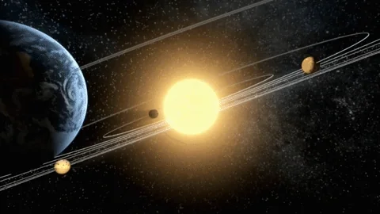
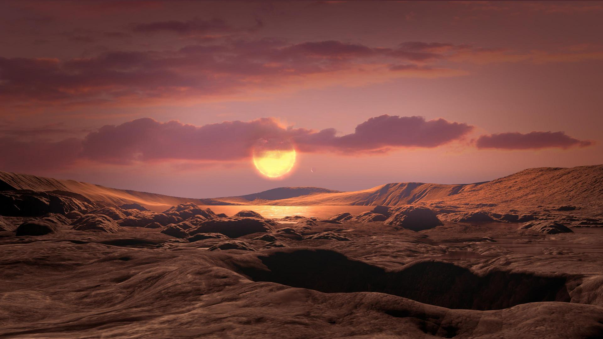

The discovery of exoplanets, planets orbiting stars outside our solar system, is a significant
development in modern astronomy. Early theories, such as Giordano Bruno's proposal in the 16th century, were
speculative due to the lack of direct observation.

The first evidence of exoplanets in the 1980s was the detection of two planets orbiting pulsar PSR
B1257+12. These planets were unique to the pulsar's radio pulses. In 1995, Michel Mayor and Didier
Queloz discovered the first exoplanet orbiting a Sun-like star, 51 Pegasi b, using the "radial velocity"
method. This groundbreaking discovery marked a significant milestone in astronomy.
Chronicles of Exoplanets refers to the ongoing discovery and study of planets outside our solar system, known as
exoplanets.
The quest for these distant worlds has become one of the most thrilling areas of modern astronomy, driven by
technological advancements, innovative detection methods, and a deep scientific curiosity.

Early Theoretical Predictions:
16th-18th Centuries: The notion of planets existing around other stars has intrigued thinkers for centuries. In 1584,
Giordano Bruno suggested that stars are suns with their own orbiting planets, but this remained a philosophical idea
without any means of verification.
19th Century: As telescopes improved, the direct observation of planets around other stars remained elusive. Nevertheless
scientists continued to theorize about their existence.
First Hints of Exoplanets (20th Century)
1917: An early spectrographic observation of the star Van Maanen 2 may have indicated the presence of exoplanetary
material, although it wasn't recognized as such until much later.
1952: Otto Struve was among the first to propose that planets could be detected by observing the "wobble" in
a star's movement caused by the gravitational influence of an orbiting planet. This concept laid the groundwork for future
detection methods, such as the radial velocity technique.
First Confirmed Discovery
1992: The first confirmed detection of exoplanets was achieved by astronomers Aleksander Wolszczan and
Frail, who found planets orbiting the pulsar PSR B1257+12. These were unusual worlds, revolving around a dead neutron
star instead of a sun-like star.
1995: A significant breakthrough occurred when Michel Mayor and Didier Queloz discovered 51 Pegasi b, a hot
Jupiter (a gas giant located close to its star), using the radial velocity method. This discovery sparked a surge in exoplanet
research.
The Golden Age of Discovery
2000-2010: The emergence of new techniques, such as transit photometry (where a planet passes in front of
its star), further advanced the field.